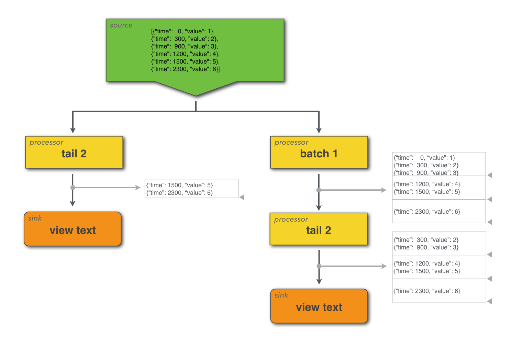

Dataflow Concepts
This section lays out some of the conceptual framework for the Juttle dataflow language.
Dataflow Language
Juttle is a declarative dataflow or stream processing language.
Each Juttle program consists of one or more flowgraphs that generate or read in streams of data, process the streams, and output results.
In each Juttle flowgraph, you pull data into your program with source nodes that either emit synthetic data or read from an external data source. In the middle of your flowgraph, you can perform operations on your data using processor nodes. You can chain and arrange these nodes arbitrarily to enable parallel processing and forking/merging of the data stream. Then each branch of the flowgraph output can either view the data in a graph using a client side visualization library, or write data to a backend for storage or to take an action like sending an alert.

The language is declarative, in that a program specifies at a high level what data to retrieve, what to do to it, and how to visualize it, not the programming details of how to actually perform these operations. This high level specification is mapped into an execution plan by the Juttle compiler, which can delegate filtering and computation to back end data stores via adapters, and which passes the data and configuration options to client-side views to render data visualizations.
Data Streams
In a Juttle, data is represented as a stream of points, where each point consists of a number of key/value fields of various data types.
When they enter a Juttle flowgraph, data points are represented and handled identically, regardless of whether they were synthetically generated, originated by tapping into a live data source, read from a persistent storage back end, or a combination. Data points may represent structured time series metrics or semi-structured log events.
Example: three points in a stream of metric data
{"name" : "errors", "value" : 42, "time" : "2014-05-28T22:11:35.332Z"}
{"name" : "errors", "value" : 44, "time" : "2014-05-28T22:11:35.353Z"}
{"name" : "errors", "value" : 46, "time" : "2014-05-28T22:11:35.532Z"}
Example: two points in a stream of Web log data
{"date":"2014-07-03T10:38:44-07:00","ip":"79.122.57.6","referer":"-","agent":"-","ctry":"US","uri":"/iotest/reply/core/utf/krw","method":"GET","bytes":18270,"bytes_in":1768,"status":200,"time":"2014-05-28T22:11:35.332Z"}
{"date":"2014-07-03T10:38:45-07:00","ip":"161.182.107.224","referer":"-","agent":"Mozilla/4.0
(compatible; MSIE 8.0; Windows NT 6.1; Trident/4.0; SLCC2; .NET CLR
2.0.50727; .NET CLR 3.5.30729; .NET CLR 3.0.30729; Media Center PC 6.0; InfoPath.2)","ctry":"US","uri":"/flick/token/scss/pause/api","method":"GET","bytes":8219,"bytes_in":682,"status":200,"time":"2014-05-28T22:11:35.332Z"}
Timeliness
Points streaming through Juttle flowgraphs must always be ordered by time, and they must arrive in a timely manner to avoid buffering problems and delays in the runtime.
-
Points flow through each processor in chronological order.
If a point has a time field, the value of its time field should be greater than or equal to the value of the time field of the previous point (that had a time field). Points for which that is not true are called "out of order".
-
Consecutive points must arrive in a timely fashion with respect to their time fields.
For example, if two consecutive points with time stamps one millisecond apart arrive 20 seconds apart, the second one has arrived "late". Based on the specific system resources available in the Juttle runtime, this may end up causing the point to not be included in the flowgraph because it arrived too late.
Points that do not have a time field (aka "timeless points") are treated as if they occurred at the dawn of time. Therefore when merging or joining a stream of timeless points with a stream of timed data points, all points from the timeless branch are treated as if they occurred "before" the timed points.
Batching
Many Juttle processors operate point-by-point, but others operate over batches of consecutive points in a given time interval.
The meanings of sort, head, and tail are probably known to anyone with exposure to the UNIX shell. But there is a twist when using these in Juttle: sort, head, and tail processors don't operate on files like their UNIX counterparts; they operate on streams of indeterminate lengths. And sort or tail can't be applied to a stream of unknown (and potentially unbounded) length, because you need to know where the stream ends in order to start the sort or tail operation.
To use these on streams of indeterminate length, you segment the stream of
points into consecutive batches that can be processed one-at-a-time by these
processors. Think of segmentation as inserting time division markers into the
stream of points; these marker carry no data and serve no purpose other than to
delineate batch boundaries that are used by processors to determine which points
to process together. Segmenting points in this way can be done with the
batch processor or by specifying the -every option to the processors themselves.
For streams that are of bounded length (such as pulled from long-term storage), an end of batch marker is always present at the end of the stream.
This simple example illustrates how batch changes the data in two different ways when starting from the same initial data stream. A diagram shows the data flow with markers pointing out the logical separation of batches of points.
Example
const data = [
{"time": 0, "value": 1},
{"time": 300, "value": 2},
{"time": 900, "value": 3},
{"time": 1200, "value": 4},
{"time": 1500, "value": 5},
{"time": 2300, "value": 6}
];
emit -points data
| (
tail 2
| view table -title 'Unbatched';
batch 1000
| tail 2
| view table -title 'Batched'
)

In addition to sort, head, and tail, another important processor that operates over batches is reduce. Reduce is used for statistics and computations over groups of points. For example, you might want to compute the average of a metric over five-second intervals, or you might want to compute the count of a given event over one-minute interval.
Batching can also be specified by passing the -every option to relevant procs.
For example:
const data = [
{"time": :0:, "value": 1},
{"time": :300:, "value": 2},
{"time": :900:, "value": 3},
{"time": :1200:, "value": 4},
{"time": :1500:, "value": 5},
{"time": :2300:, "value": 6}
];
emit -points data
| reduce -every :1000s:
| (
tail 2
| view table -title 'Unbatched';
batch 1000
| tail 2
| view table -title 'Batched'
)
Grouping
Several processors use the by operator to specify grouping fields. The by operator causes the processor to execute its logic separately for each unique combination of the grouping
fields.
The following processors accept a by clause:
Each point in the output of the processor contains all of the grouping fields in addition to fields created by the processor. Consider the following program, which uses modulo arithmetic to create groupings by remainder:
emit -from :0: -limit 10
| put x = Date.unix(time)%3
| reduce y = count() by x
| view table
Which will output:
┌──────────┬──────────┐
│ x │ y │
├──────────┼──────────┤
│ 0 │ 4 │
├──────────┼──────────┤
│ 1 │ 3 │
├──────────┼──────────┤
│ 2 │ 3 │
└──────────┴──────────┘
In this example, the count reducer is applied to each group of unique value of x (0, 1, and 2). There are 4 points with an x value of 0 (time: 0, 3, 6, 9) and 3 points with each of the other values of x.
Passing multiple fields into the by operator outputs one point per unique combination of the grouping fields. For example the following Juttle program outputs 6 points, because there are 2 unique values of x, and 3 unique values of y:
emit -from :0: -limit 10
| put x = Date.unix(time)%2, y = Date.unix(time)%3
| reduce by x,y
| view table
This program outputs the following:
┌──────────┬──────────┐
│ x │ y │
├──────────┼──────────┤
│ 0 │ 0 │
├──────────┼──────────┤
│ 1 │ 1 │
├──────────┼──────────┤
│ 0 │ 2 │
├──────────┼──────────┤
│ 1 │ 0 │
├──────────┼──────────┤
│ 0 │ 1 │
├──────────┼──────────┤
│ 1 │ 2 │
└──────────┴──────────┘
These processors can use assignments and grouping operators together to aggregate data over a batch and group by a field. For example if a stream of data had points with the fields time, host, metric, and value, then reduce could be used to aggregate values and group them by host.
Example: Here's a more complex example that uses grouping in a few different ways
//
// Example of using grouping with reduce with both historical
// and live sources
//
// Classify the point into either side given the parameter c
function choose_side(c) {
return (c%2 == 0) ? "left" : "right";
}
// Generate synthetic historical data with a value and a grouping
sub historical_points() {
emit -from :0: -limit 10
| put value=10 * count(), group=choose_side(count())
}
// Generate similar synthetic data but starting at now so it runs live
sub live_points() {
emit -limit 10
| put value=count(), group=choose_side(count())
}
// Read the historical points in one big batch and reduce all points to a
// single result table.
historical_points
| reduce cnt=count(value), sum=sum(value), avg=avg(value), stdev=stdev(value) by group
| view table
-columnOrder 'group','cnt','sum','avg','stdev'
-title "Historical statistics by group";
// Read the historical points in 5 second batches
historical_points
| batch :5 seconds:
| reduce cnt=count(value), sum=sum(value), avg=avg(value), stdev=stdev(value) by group
| view table
-columnOrder 'time','group','cnt','sum','avg','stdev'
-title "Historical 5-second statistics by group";
// Read the live points and divide into 3 second batches
live_points
| batch :3 seconds:
| reduce cnt=count(value), sum=sum(value), avg=avg(value), stdev=stdev(value) by group
| view table
-columnOrder 'time','group','cnt','sum','avg','stdev'
-title "Live 3-second statistics by group";
Forking and merging
The Juttle language supports forking and merging, by which you can process the same data multiple ways in parallel or combine two streams into one.
A semicolon (;) indicates the end of a branch of the flowgraph. Parentheses
group flowgraph statements, and these two are used together for both forking and merging.
When flowgraph branches are merged together, the points are ordered with respect to time so that the downstream processors can continue to operate on the incoming data in time order.
Here's an imaginary program that both forks and merges:
read mydata -last :day:
| (
filter ...
| head 10;
reduce ...
)
| view table
That example can also be illustrated like this:
filter ... | head ...
/ \
read mydata -last :day: view
\ /
reduce ...
Here are some other examples:
Example: Forking to two views
Instead of one output, this flowgraph ends with a group of two parallel views:
emit -from :2 minutes ago: -every :1s: -limit 100
| put message = "Hello World!", num_points = count(time)
| ( view table;
view timechart
-valueField 'num_points'
-duration 100
)
Example: Merging two sources into one output
Two sources are processed separately, then merged and processed together, and finally displayed in a single table:
// Example: Merging two sources into one output
// 9 parts having board_ids are joined against table of board_id->boardname
( emit -from :0: -limit 9
| put part_id=count(), part="part-${part_id}", board_id=count() % 3 + 1
| remove time;
emit -from :0: -limit 3
| put board_id=count(), board="board-${board_id}"
| remove time;
)
| join board_id
| keep part, board
| view table
Joining streams
The join processor overrides the usual stream merging behavior (which reorders and forwards its input points). It consumes its input points and emits new output points that combine their values.
The processor groups its input points into batches, either by using batch information in the stream, or by treating each time stamp value as a batch (there may be more than one point having the same time stamp). If there are no time stamps for an input stream, all its points are treated as one batch. join creates an output point by selecting a batch from each input and performing a relational join on the batches (but see further below for how join operates differently when given a single stream). To understand join, you need to understand how it matches batches for joining, and how it joins points from batches as they are matched.
Matching batches between streams
It is easiest to think of batch matching by imagining points arriving in real-time streams at the join. Whenever a complete batch arrives from one input stream, that batch is joined against the most-recent complete batch from the other input stream. Imagine that points with the same time stamp arrive at the same instant and are processed simultaneously. If two streams of input points having identical sequences of unique time stamps enter a join, each IS matched with the other by time stamp, and a sequence of output points is produced having those same time stamps.
When batches arrive with different time stamps, or at different frequencies, match-against-most-recent implies there is an output point for each unique time stamp on any input. It also implies that a batch might be used more than once if the other input has new batches arriving more rapidly. An example of this arrangement is a join between a stream of points that contains customer IDs, and a table (a single batch) of points that contains customer IDs and additional customer information. The customer information batch remains parked at one join input while many customer points arrive at the other input and are joined against it.
Sometimes you want a one-to-one match between time stamps in input
streams. For this behavior, include time in fieldName list of the join.
A point is only matched and joined against another point that has the
same time stamp. You can relax this by specifying -maxoffset,
which allows points to match
if their time stamps differ by less than this (it is still treated as a
one-to-one match, so a time stamp will still be matched at most once in
this mode). If points are arriving more quickly on one input, or if the
time stamps for one input are much older, that input is "fast-forwarded"
to a newer point with the best match, and any older points are
discarded. The expected use for this is in joining streams that have the
same frequency but that are staggered in time. If join such streams
without specifying the time field, the join produces twice as many
output points, with each input batch participating in two join
operations as the inputs ratchet past each other.
Although we have been imagining points with the same time stamp arriving simultaneously, points with the same time stamp may actually arrive at different times. join emulates simultaneous arrival by waiting until a new batch has begun arriving before processing a waiting batch (and coordinating this wait between inputs). join does not attempt to estimate or compensate for skewed input timing. It minimizes the difference between matched inputs by possibly fast-forwarding one of the inputs if it has a backlogged time stamp closer in value. It produces the same results on historic data and real-time data, or a combination of them.
Joining points between batches
Once a batch has been chosen from each input, for each pair of points having matching join field values, an output point is produced that combines the fields of the input points. In case of collisions, a tie-breaker remains to be specified. This is similar to an SQL join, with the batches being like tables, and the points in the batches being like rows in the tables. The input batching and join fields are usually specified in a way that yields a one-to-one match between points in the batch, and you get an output point for each input point. If this is not the case, you will have output points for multi-way combinations of input points, and you would likely apply an additional filter or aggregation downstream to reduce the result set.
Time stamps are ignored during the relational join operation, and the output point is given the newest time stamp of the input batches.
Joining points in a single stream
Although there is no formal notion of a relational join for a single stream, it is convenient to be able to operate on the points of a single stream as if they come from different inputs and are merged upstream. join does this when applied to a single input stream: for each batch of points (or each group of points having the same time stamp), it separates them into groups based on matching join keys, and then generates an output point that is the union of the fields of all the points in a group (a many-to-many join of all the points in the group). The output contains one point for each time stamp and unique join key value within the points.